Milford Sound
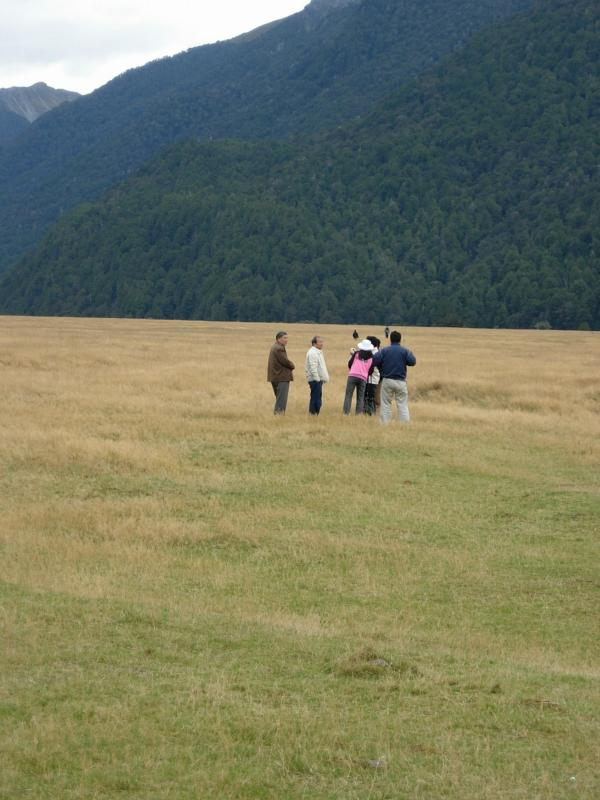
The tour bus made several photo stops on the 4-hour trip from Queenstown to Milford Sound. At the first stop we piled out to observe the Korean gentleman on the left taking a whiz on the grass.
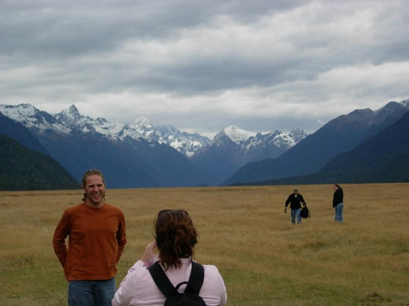
This occasioned much hilarity
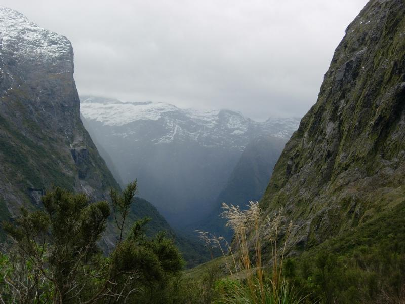
Mountains looking down on the sound. There road takes a sharp drop to sea level.
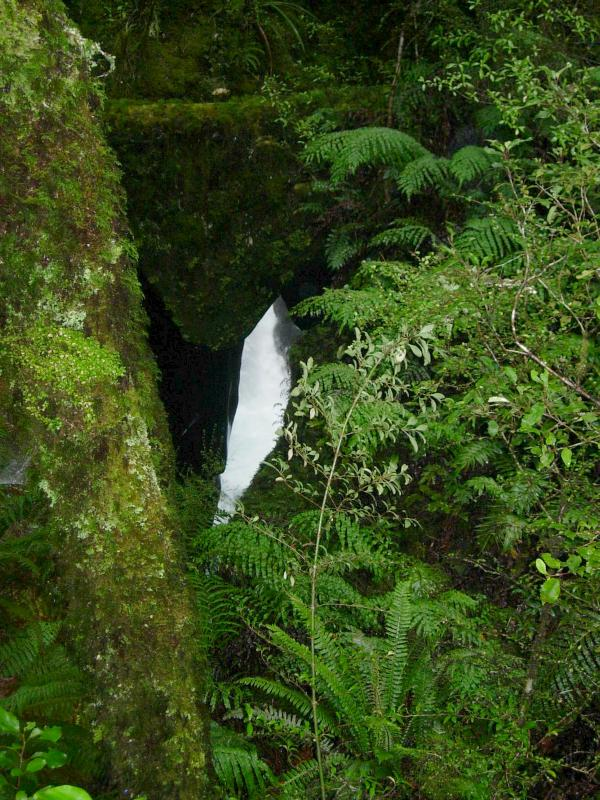
We stopped at "The Gorge". It's a deep, narrow V-shaped crevass with water flowing along the bottom.
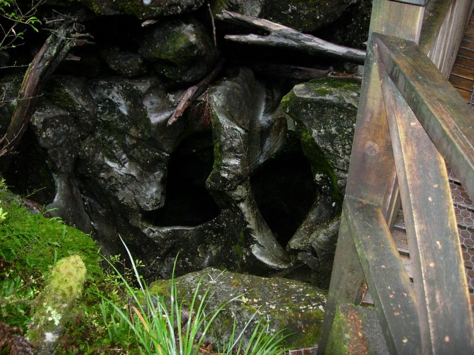
The rocks are carved with many odd-shaped holes.
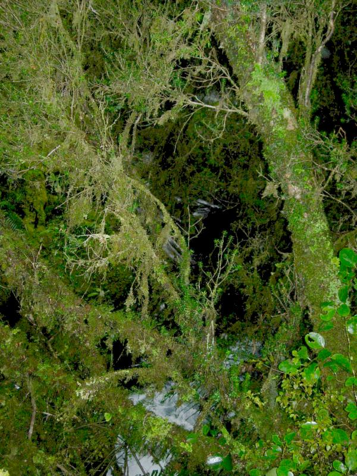
The whole Milford Sound area is wet from above and below. Rainfall here is around 7m per year. It typically rains 206 days a year.
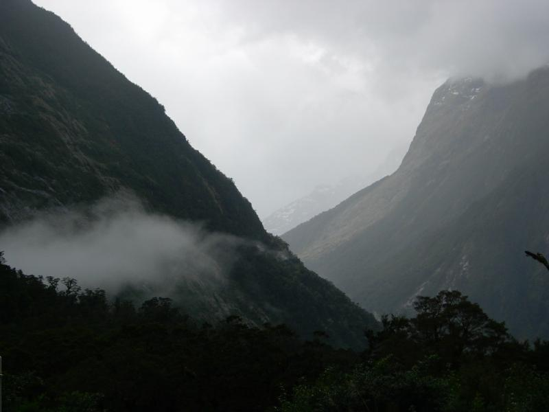
Clouds and mists abound.
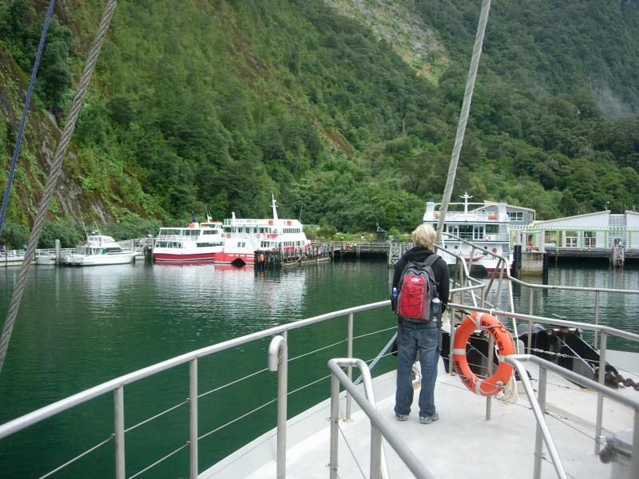
There's no town at the head of the sound, but a dock from which tour and fishing boats leave.
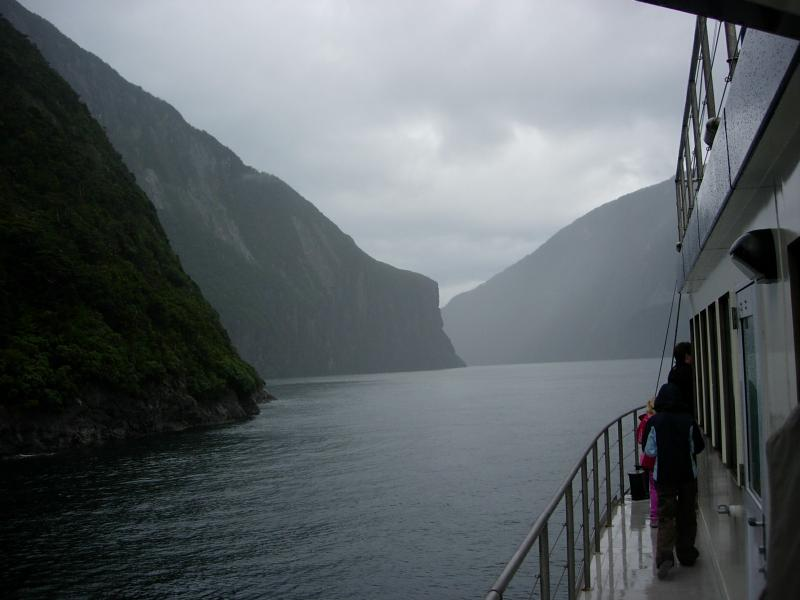
Heading out onto the sound. Heavy rain at this point.
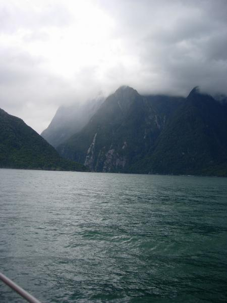
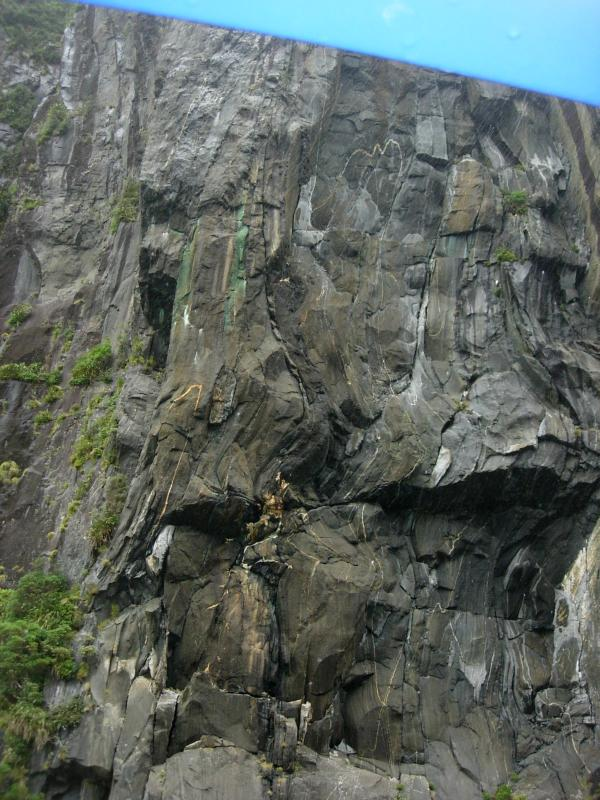
The minerals in the dykes in the bluffs indicate the presence gold. There was a gold rush in the late 1800s. Prospectors quickly discovered that volcanic gneiss is really, really hard, and should you manage to dislodge a chunk, it straightaway falls 450m to the bottom of the sound. Fortunately for the red and black corals growing there, the miners too took nature's hint and returned to the goldfields of Otago.
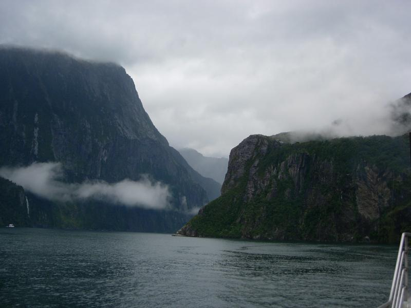
The narrowest point of the sound. Milford was "discovered" by a captain fleeing a storm. He entered the narrows believing it to be a river (as maps then showed), and dicovered the rest of the sound.
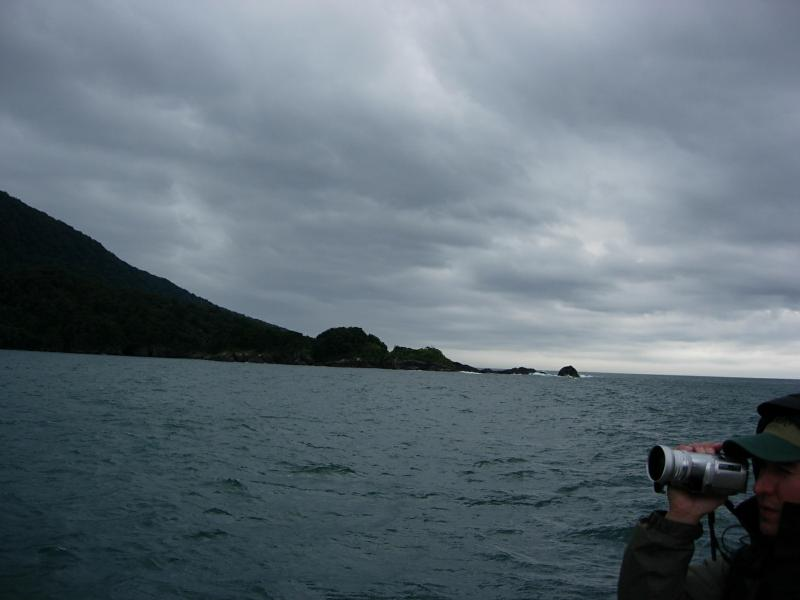
The end of land. The Sound merges into the Tasman sea. From here, it's a straight shot to Antarctica. The rock near the end is Post Office Rock. Early settlers would leave mail there for a passing ship to pick up.
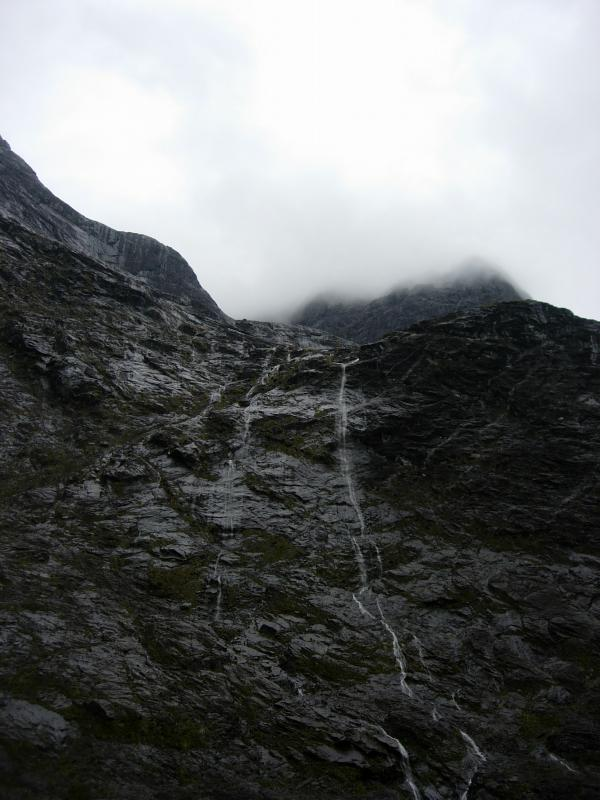
Water trickles down the blufs continuously from the mist.
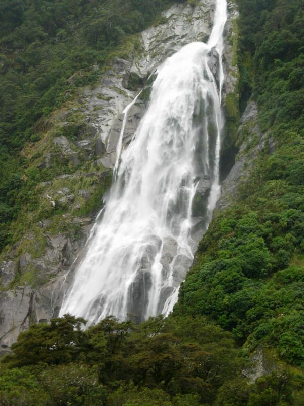
Rain creates many falls. Falls (.mov; 12MB)
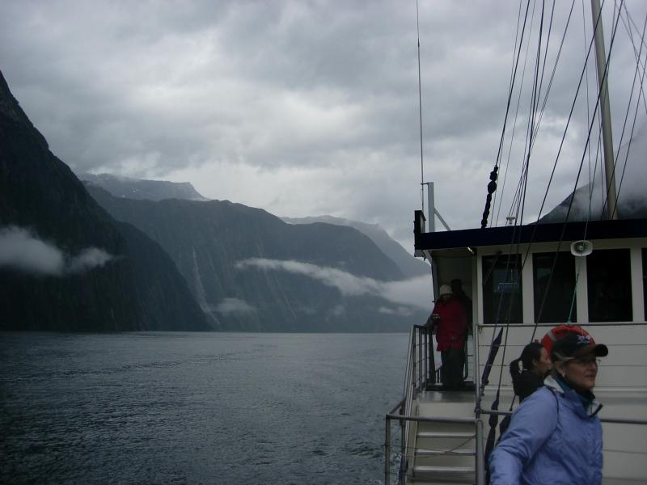
Approaching the dock